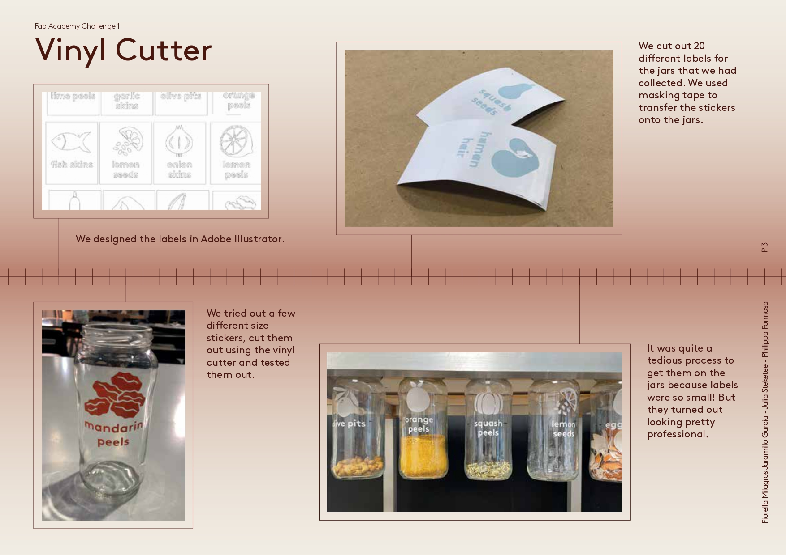
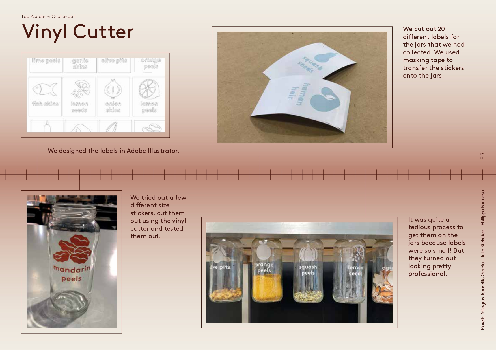
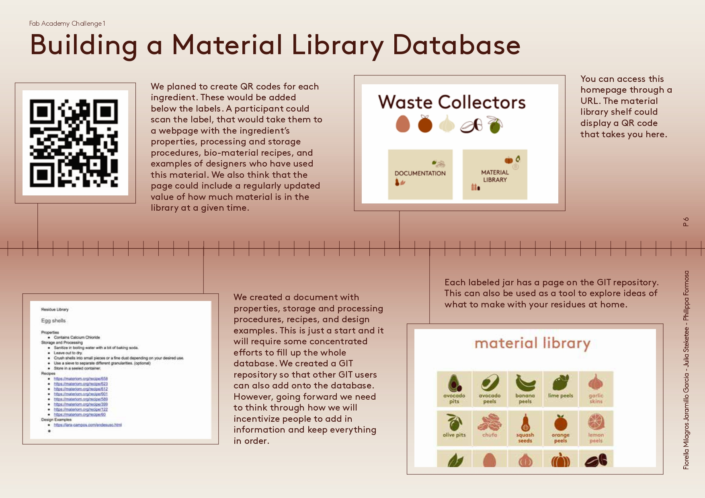
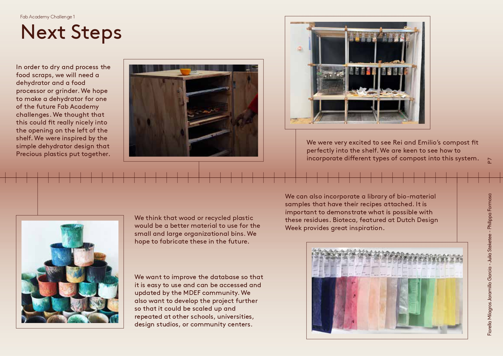
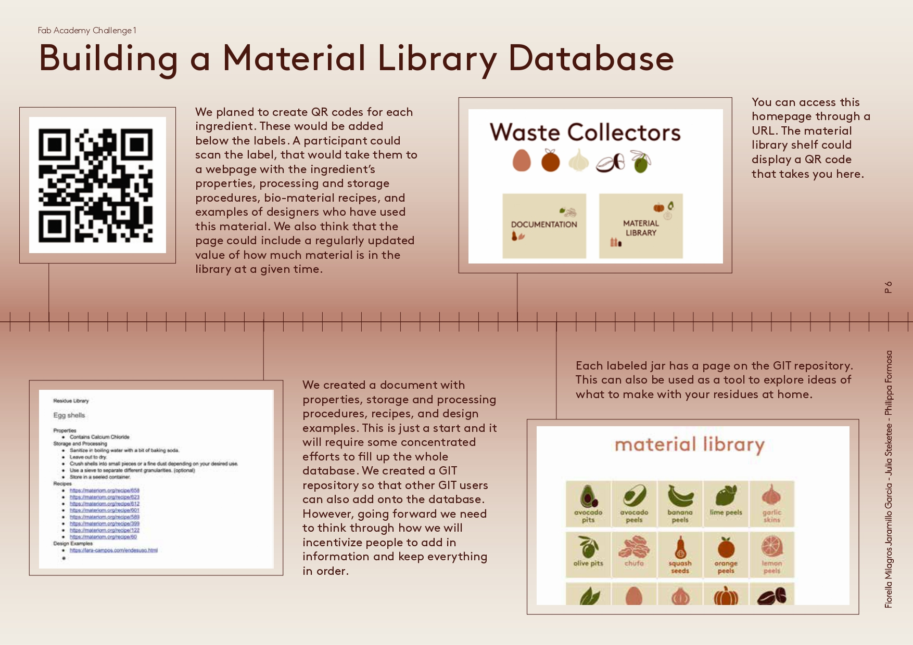
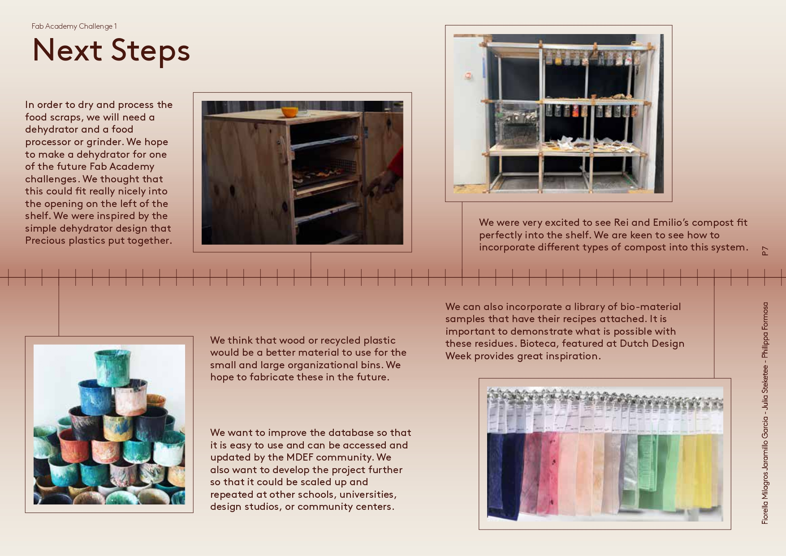

 



BILL OF MATERIALS
1. recycled glass jars.
2. vinyl stickers and vinyl cutter to cut stickers.
3. cardboard for boxes (ideally these could be made out of wood or a more resistant material) we worked with cardboard because it was a good materials to prototype with.
4. wooden strips to screw jars into.
5. an existing shelving unit (you can adapt the design to what is available).
LINKS TO FILES
DehidratorCutting Boxes
Illustration for the stickers in the jars